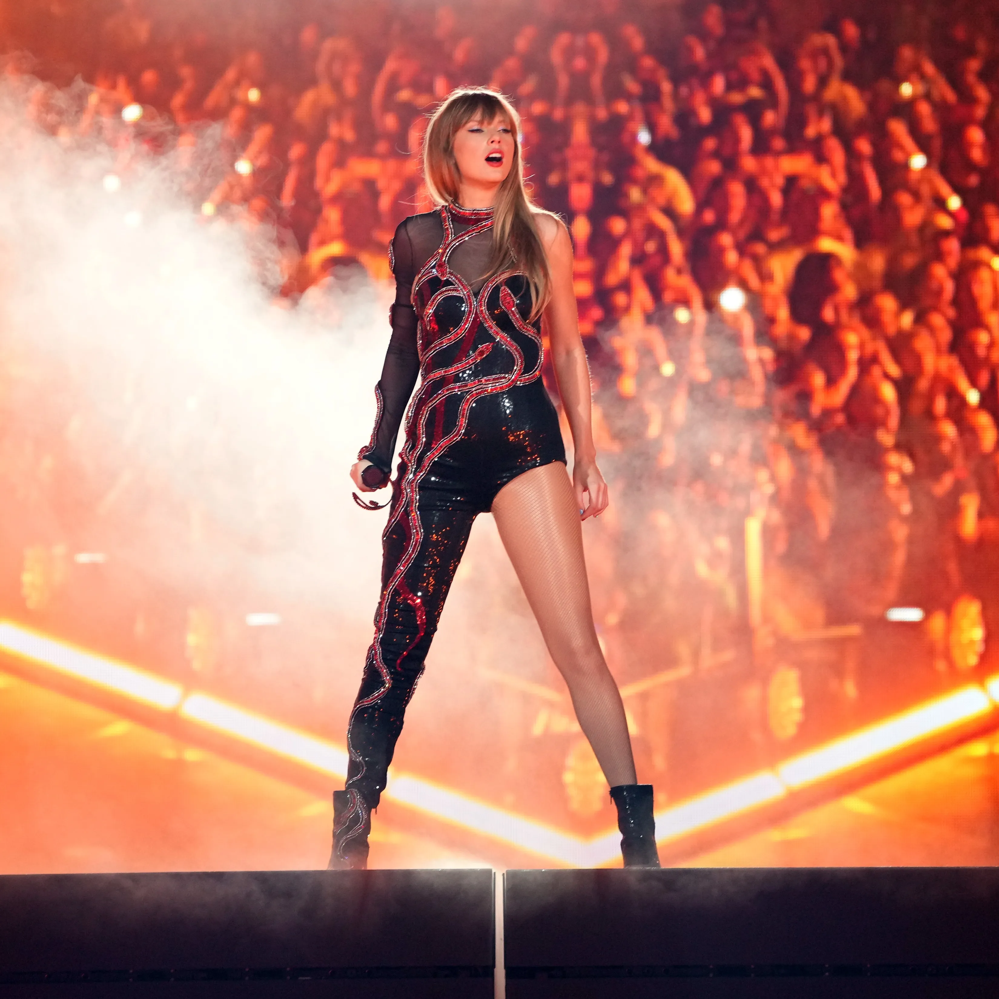
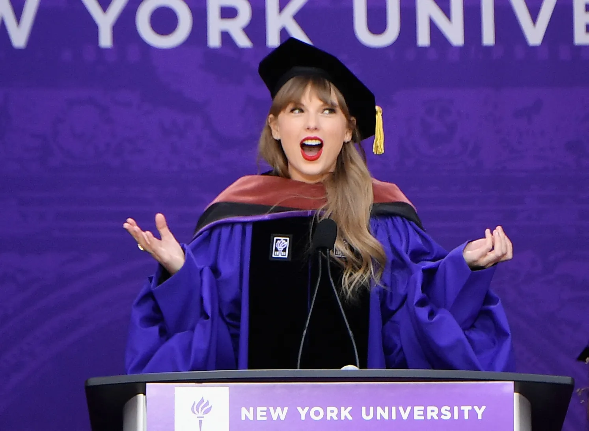

<!DOCTYPE html>
<html>
    <head> 
    <title>Galerie</title>
    <meta charset="utf-8">
    <meta name="author" content="Mayssa Ben M'rad">
    <meta name="keywords" content="tp,html,taylor">
    </head>
</html>
<body>
    <header> <center>
        <h1>Images et Vidéo de l'artiste</h1>
        <nav>
            
            
            <table>
                <tr>
                    <td><h5><a href="index.html" target="_blank">revenir à la page menu</a></h5></td>
                    <td><h5><a href="evenements.html" target="_blank">Evénements</a></h5></td>
                    <td><h5><a href="contact.html" target="_blank">Contact</a></h5></td>
                </tr>
            </table>
        </nav>
        Nous vous présentons dans notre galerie numérique, <b>des photos des moments marquants de la
        carrière de la chanteuse américaine Taylor Swift</b> en plus <b>d'une vidéo de présentation</b> qui vous fournira 
        plusieurs informations sur sa vie et ses exploits.
    </center>
    </header>
    <section>
        <center>
        <h2>The Eras Tour</h2>
        
        <aside>Taylor Swift arbore des créations sur-mesure pour sa tournée</aside>
        <h2>Taylor Swift remporte le prix de la vidéo de l’année pour son titre “Fortnight,”</h2>
        
        <aside>
            Taylor Swift devient l’artiste la plus récompensée des MTV Video Music Awards, devant Beyoncé.
        </aside>
        <h2>Taylor diplomée de NYU</h2>
        
        <aside>
            La chanteuse Taylor Swift a reçu mercredi 18 mai <b>un doctorat honorifique en art,
             de l'Université de New York (NYU).</b>
             <br/>
              L'établissement l'a saluée comme «l'une des artistes les plus prolifiques
              et les plus célèbres de sa génération» dans un communiqué de presse partagé en mars.
        </aside>
        <h1>Présentation de l'artiste</h1>
        <video src="Taylor.mp4" width="1000" height="500" controls></video>
        </center>
    </section>
    <footer>
        
        Created by Mayssa Ben M'rad
        <br/>
        <a href="mailto:b.mrad.mayssa@gmail.com">b.mrad.mayssa@gmail.com</a>
            <a href="tel:27521990">27521990</a>
            <br/>
            Copyright:
                <ul>
                    <li>
                        <a href="https://www.lefigaro.fr/culture/taylor-swift-devient-docteur-de-l-universite-de-new-york-20220519" target="_blank">
                            &copy; pour plus d'informations sur le diplome de NYU de Taylor
                        </a>
                    </li>
                    <li>
                        <a href="https://www.vogue.fr/galerie/taylor-swift-tournee-eras-meilleures-tenues-mode" target="_blank">
                            &copy; pour plus d'informations sur les tenues de the eras tour
                        </a>
                    </li>
                    <li>
                        <a href="https://www.7sur7.be/musique/taylor-swift-devient-lartiste-la-plus-recompensee-des-mtv-video-music-awards-devant-beyonce~a1c76236/?referrer=https%3A%2F%2Flens.google.com%2F" target="_blank">
                            &copy; pour plus d'informations sur les récompenses de Taylor Swift
                        </a>
                    </li>
                    <li>
                        <a href="https://www.youtube.com/watch?v=q45PSHV1jXI&t=1s" target="_blank">
                            &copy; Source de la vidéo: Brut
                        </a>
                    </li>
                    
                </ul>
            
            
            
            
    </footer>
</body>